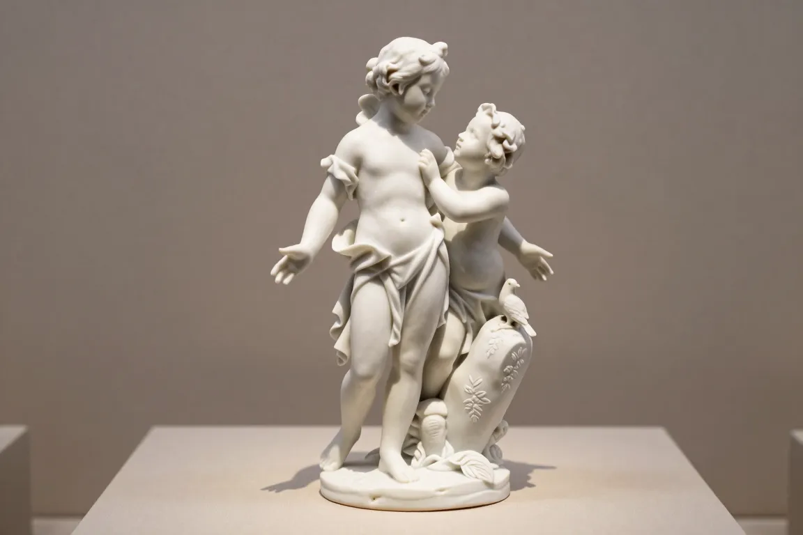

Неглазурованные белые фарфоровые фигурки, похожие на мрамор и показывающие форму без цвета. Венсенн и Севр делали их по картинам Буше и моделям Фальконе для десертного стола и полки.

Главная идея
Когда глазурь и цвет убраны, остаётся одна форма, так что фарфоровая фигурка в руке выглядит как тонкий мрамор.
Принципы дизайна
Оставляйте фигуру без глазури после первого обжига, чтобы поверхность оставалась матовой и белой.
Обжигайте мягкий фарфоровый черепок примерно при 1100 °C, чтобы зерно было тонким, а край мягким.
Лепите фигуру по живописцу или скульптору: пасторальная группа, ребёнок, классическая богиня.
Отливайте фигуру из составных форм и заделывайте каждый шов ножом и влажной кистью.
Держите поверхность гладкой, с тонким зерном, как у сахара, и лёгким тёплым кремовым тоном.
Делайте фигуру высотой 15–40 см, на простом основании с небольшим формованным краем.
Не берите эмаль. Допускайте одно касание золота или цветной глазури только на основании.
Показывайте складки, волосы и ленты резким неглубоким рельефом, который ловит свет.
Антипаттерны
Глянцевая глазурь по всей фигуре
Яркая эмалевая роспись лица и платья
Тяжёлый гончарный черепок с грубым зерном
Грубая неровная поверхность с видимыми швами формы
Резкий холодный белый с синим оттенком
Поза, полная кружев и мелких цветов, скрывающая форму